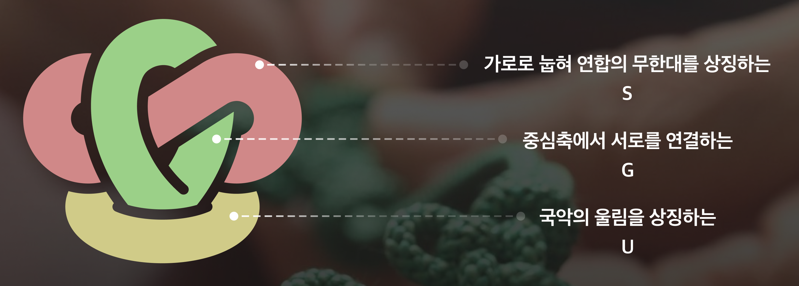
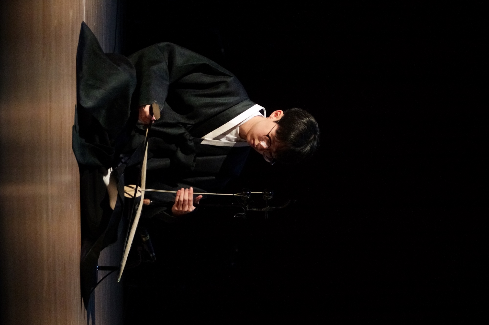

Vision
국악이 누구나 즐기는
국악이 누구나 즐기는
음악이 되는 세상
대중이 공연 관람자 또는 취미 연주자로서 다양하게 접근할 수 있는 서양의 클래식이나 밴드 음악과 달리, 국악은 국공립 악단과 같은 제도적 틀 속에서만 성장해 왔습니다.
전문 연주자가 아닌 일반 대중에게는 국악 공연을 관람할 동기도 부족할 뿐더러, 취미로 즐기기도 어려운 상황입니다.
이에 비록 아마추어일지라도 대학생으로부터 시작해 대중이 만들고 즐기는 국악, 대중이 주도하는 국악의 새로운 흐름을 제시하고자 합니다.
Our Logo
각자의 소리, 하나의 매듭
서울국악동아리연합의 이니셜 S·G·U를
하나의 전통매듭처럼 엮었습니다.

- S무한한 연합
- 가로로 눕힌 S는 연합의 무한대를 상징합니다.
- G서로의 연결
- G는 중심축에서 서로를 연결합니다.
- U국악의 울림
- U는 함께 만들어 가는 국악의 울림을 상징합니다.
세 글자는 서로 다른 학교, 다른 연주자를 뜻하는 독립된 획이지만, 완전히 갈라지지 않고 한 지점에서 얽히고 겹치며 하나의 형태를 이룹니다.
여러 학교의 소리가 한데 모여 연결되고, 각자의 색을 지닌 채로 하나처럼 어우러지는 서울국악동아리연합 특유의 정체성을 담았습니다.
연합 대표 소개
장진형
대표, 악장
2022년
- 고려대학교 정치외교학과 입학
- 고려대학교 국악연구회 해금 파트장
2025년
- 고려대학교 국악연구회 악장, 학술부장, 타악 파트장
- 서울국악동아리연합 총무
